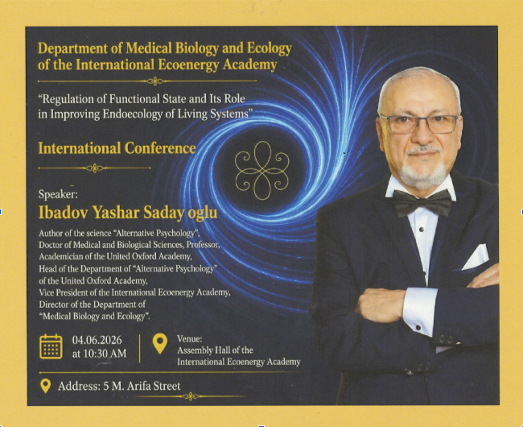
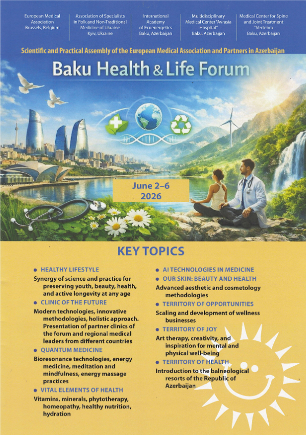
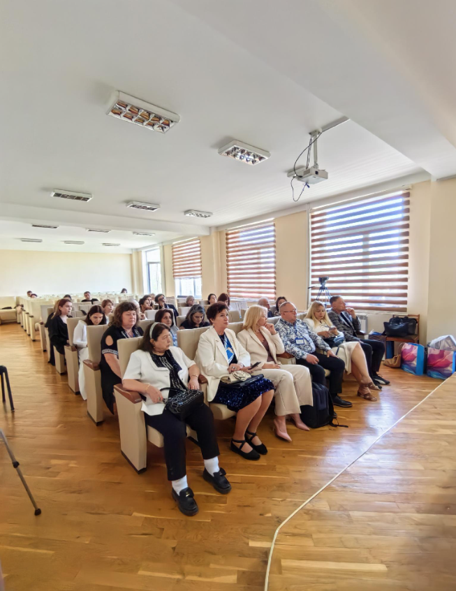
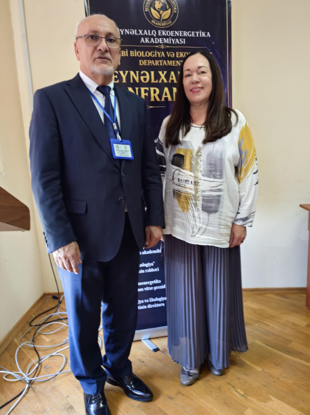
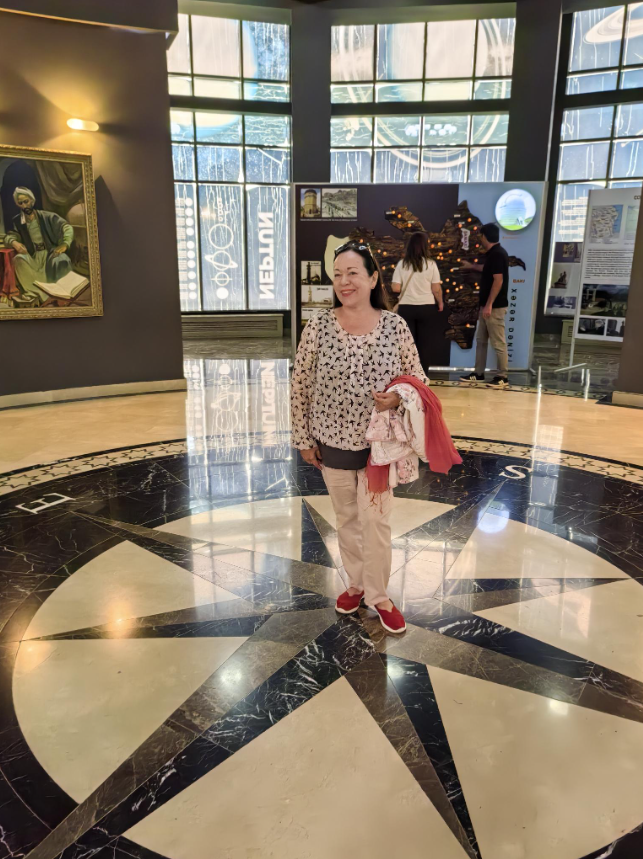
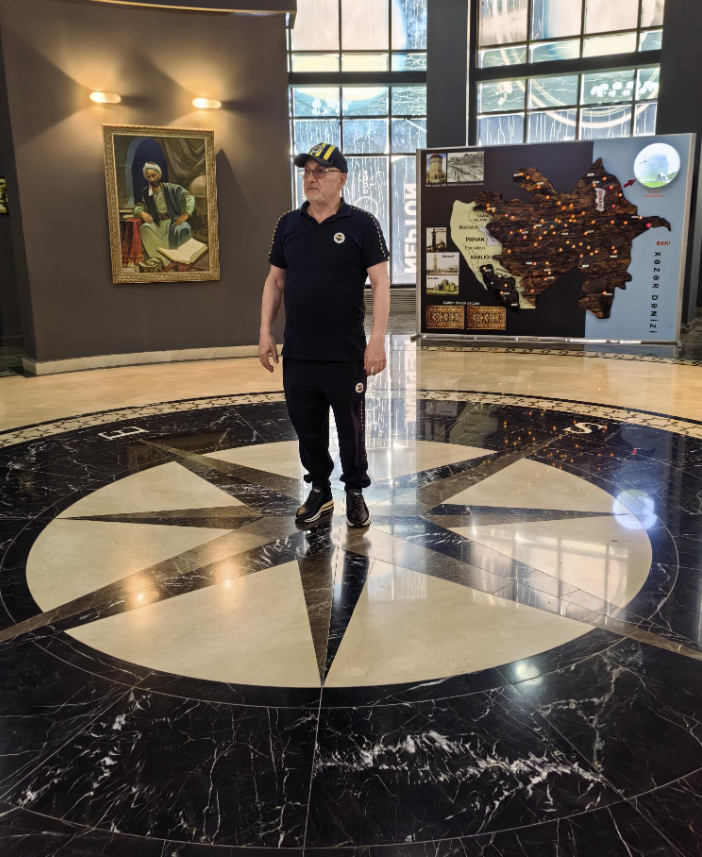
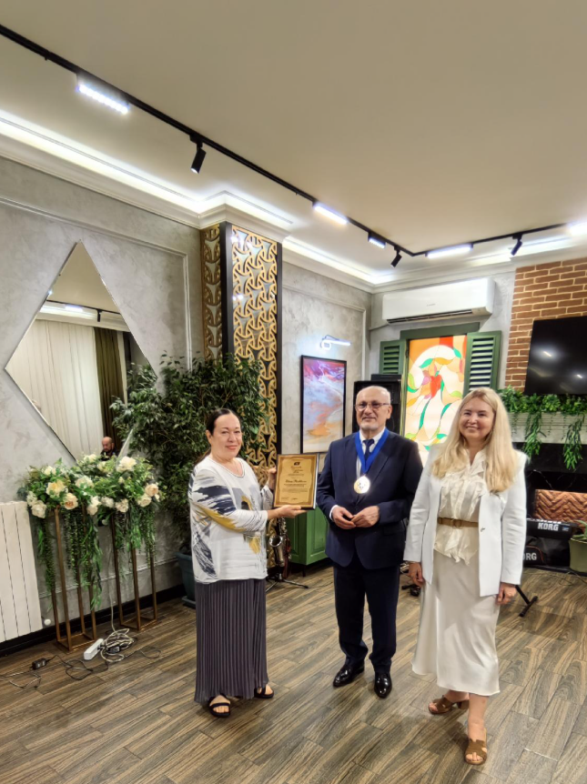
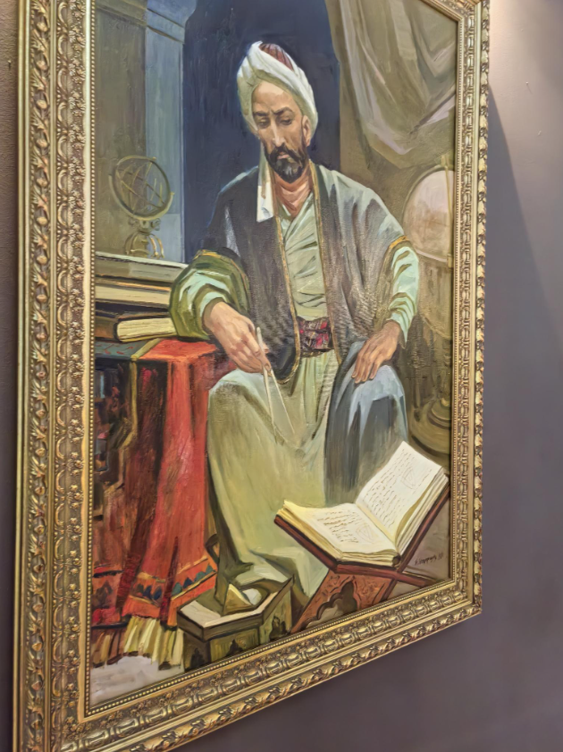

Итоги Международной конференции в Баку:
новые горизонты в управлении
адаптационными возможностями организма
2-6 июня 2026 г. в г. Баку (Азербайджан) состоялась Международная конференция «Регуляция функционального состояния и её роль в улучшении эндоэкологии живых систем».

Основной целью конференции стало обсуждение современных научных исследований, связанных с управлением функциональным состоянием организма, повышением его адаптационных возможностей, сохранением внутреннего экологического баланса и укреплением здоровья человека.Принимающей стороной и организатором конференции выступил Департамент Медицинской биологии и экологии, действующий при Международной Экоэнергетической Академии.

Директором департамента является академик Яшар Садай оглы Ибадов — доктор медицинских и биологических наук, профессор, автор науки «Альтернативная психология», академик Оксфордской Объединённой Академии, руководитель Департамента «Альтернативная психология» Объединённой Академии и вице-президент Международной Экоэнергетической Академии, официальный представитель Европейской медицинской ассоциации (EMA) в Азербайджане. Во многом благодаря организационному таланту и активной жизненной позиции своего руководителя, Департамент успешно осуществляет деятельность в сфере образования, научных исследований и общественного просвещения, проводит многочисленные научные мероприятия, посвящённые практическому применению методов Альтернативной психологии в решении современных гуманитарных и экологических проблем.В рамках конференции «Регуляция функционального состояния и её роль в улучшении эндоэкологии живых систем» были заслушаны научные доклады по биоэнергетике, функциональной диагностике, адаптационным механизмам биологических систем, влиянию стрессовых факторов на живые организмы, а также методам оздоровления эндоэкологической среды.

В мероприятии приняли участие учёные, исследователи, врачи и специалисты из различных стран мира, представившие новые подходы к восстановлению и оптимизации функционального состояния живых систем. Волгоградскую школу альтернативной психологии представила на форуме Е.В.Росликова.Европейская медицинская ассоциация Королевства Бельгия присудила звание лауреата и диплом «Бренд года в области психологии и экологии-2026» в номинации Альтернативная психология директору Регионального социально-экологического центра «Яш-Эль», психографу, экологу, психологу, коучу Международной школы альтернативной психологии Елене Росликовой «в знак признания ее победы в ежегодном международном конкурсе профессиональных достижений, отмечающем ее выдающийся вклад в развитие современной альтернативной психологии, инновационные подходы к психографии и экологическому образованию, а также активное внедрение передовых интегративных методов в области благополучия человека и социальной экологии».

Доклад на тему «Применение методов альтернативной психологии для коррекции фазового состояния социально-экологической системы «Город» на примере Волгограда» был отмечен сертификатом Европейской медицинской ассоциации, который «подтверждает высокий профессиональный уровень доклада и признает значительные достижения, лидерские качества и новаторский вклад обладателя сертификата в свою профессиональную область медицины и оздоровления».

За активное участие в Международной конференции Елене Росликовой был также вручен Сертификат от имени Международной экоэнергетической академии.

Международная конференция стала значимой платформой для обмена научными знаниями, представления инновационных подходов и развития междисциплинарного сотрудничества. В рамках конференции было подписано Соглашение о научном сотрудничестве с целью расширения научно-исследовательской деятельности, укрепления международных научных связей и реализации совместных проектов.

В значительной мере живому обмену идеями, установлению профессиональных контактов способствовала интересная программа неформального общения. Незабываемое впечатление произвела экскурсия в Шемахинскую Астрофизическую Обсерваторию.

Форум завершился великолепным банкетом с награждениями в теплой обстановке азербайджанского гостеприимства.
Давайте вместе сохранять наш мир, наших близких и наше здоровье!